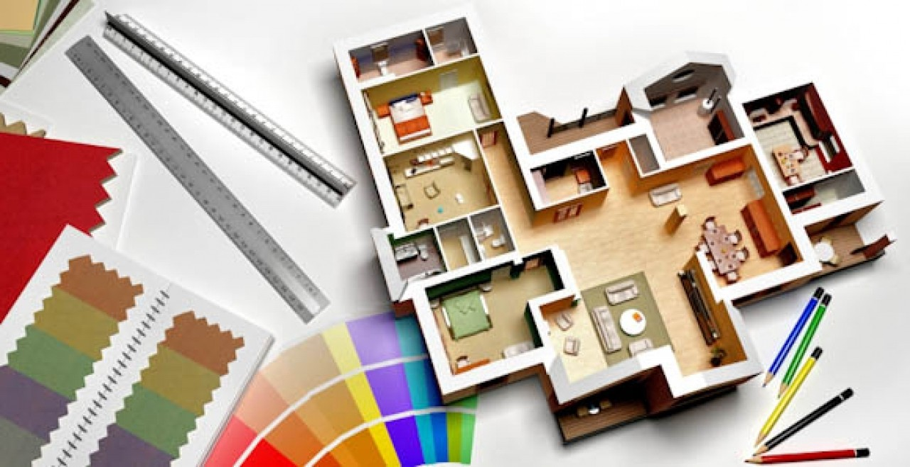

Interior designing is the arrangement of living space i.e. organizing, managing and planning of the interiors of rooms at homes,
offices, retail shops, showrooms, hotels, airports, exhibition halls, conference centres, theatres, TV and film studios and
commercial establishments etc. The objective of designing space is to achieve functionality and to create the right kind of
atmosphere for the right budget.
Qualification requirements
- Most Interior Designing undergraduate programmes can be pursued after any stream in class 12th
- However, the School of Interior design, CEPT, Ahmedabad offers 5 year professional programme in Interior design to candidates
who have passed +2 with 55% aggregate in Maths/Biology, Physics, Chemistry and English.
Colleges to choose from
- CEPT, Gujarat
- NID, Ahmedabad
- Arch Academy of Design, Jaipur
- Pearl Academy